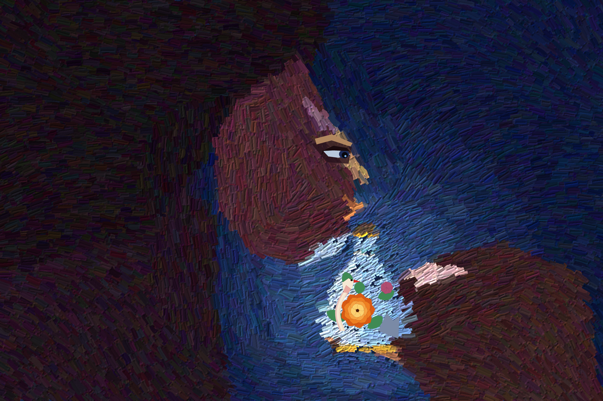

after a Chinese enamel snuff bottle with peony and bird, and Aldegrever's Saturn holding a child
He has a bottle the size of a hand,
and on it a garden with a bird in it,
and he is the weather over that garden.
The light is from the garden. His face is the shut side of a house.
One eye, low, the width of a seed, goes down into it
and stays.
I did not paint him loving it. I painted him not moving.
2026. Painted in code with a bristle brush I built; the garden is drawn by hand on top, hard-edged, on purpose. No photograph, no image model.